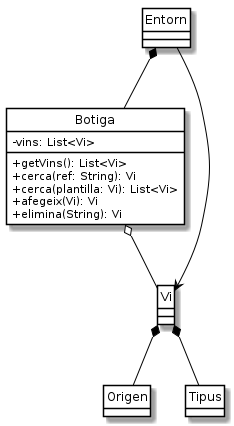

Exercici 35_14. Cerques de vi amb múltiples resultats
Exercici 35_14. Cerques de vi amb múltiples resultats
Context
Carpeta de lliurament:
35_14_botigacerca/Continguts relacionats: Llistes
Com lliurar-lo: instruccions
[✓] Exercici amb autoavaluació
Enunciat
A Ca l'Estrella els està anant molt bé la nostra aplicació. S'ha reduït força el problema de trobar el vi. Com passa amb tot, però, sempre hi ha maneres de millorar-ho i, en aquest cas, la nostra aplicació presenta una limitació molt trista: només permet obtenir un vi per cada cerca, malgrat que, de vegades hi poden haver més d'un vi que compleixi els requeriments dels clients de la Sra. Estrella.
Això ho hem de solucionar. La proposta és que cerca() ara ens retorni
una llista de vins.
Aquest serà el nostre nou objectiu: afegir cerques amb múltiples resultats.
A banda, en veure la potència de les llistes, ens toca fer un plantejament
amb la manera de guardar els vins de la classe Botiga.
De moment guardem els vins a un array amb una capacitat màxima i un control complex per culpa de que la funcionalitat d'eliminació de vins ens deixava posicions nuŀles. I pensar que, a sobre, de moment hem deixat de necessitar l'opció d'eliminació…
En aquesta nova versió, reemplaçarem l'array de vins a Botiga per una
llista. Això també elimina la necessitat del constructor específic
Botiga(int), els mètodes iniciaRecorregut() i getSeguent().
Tampoc no llençarem l'excepció BotigaException quan la botiga està
plena. Clar, ara ja no tindrem un màxim!.
Aquestes accions de simplificació/neteja solen passar desapercebudes als nostres usuaris però a nosaltres ens faciliten molt la feina futura. Les hem de fer amb compte de no introduir errors, però… qui té por quan disposem de jocs de prova?
El nostre model quedarà de la següent manera:

Cerques amb resultats múltiples
Un parell de consideracions addicionals:
Quan cerquem un vi a partir d'una plantilla, a partir d'ara
cerca(Vi)ja no ens tornarà mainullencara que no es trobi cap vi. retornarà unaList<Vi>amb zero o més vins.Tot i que podríem escollir
ArrayListoLinkedList, tenint en compte quecerca()molt probablement anirà afegint vins al final de la llista i que aquesta serà usada per un recorregut seqüencial, potser la implementació més adequada seria ambLinkedList.Totes les llistes de retorn seran immutables.